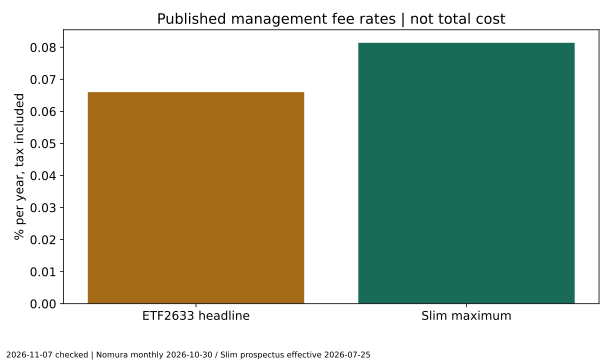
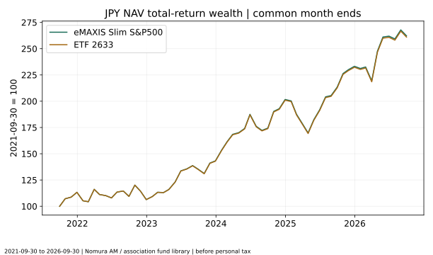
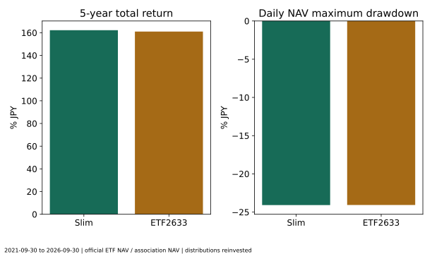
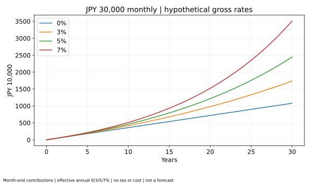
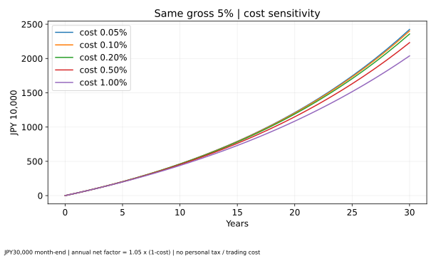
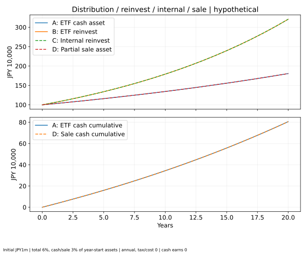

ETFと投資信託の違いとは？新NISAではどっちがおすすめ？手数料・分配金・長期リターンを徹底比較
公開日・更新日・調査日：2026年11月7日｜執筆・編集：トピック基地編集部
ETFも投資信託の一種です。上場するかどうかで、注文方法・購入単位・分配金の扱いが変わります。同じS&P500に連動する国内2商品の共通5年と、長期の費用・積立・再投資を比べ、選ぶときの確認点を整理します。
ETFも投資信託の一種：比較するのは上場と非上場
ETFは「上場投資信託」です。投資家から集めた資金をまとめて運用する投資信託のうち、取引所に上場し、株式と同じように売買できるものを指します。一般的な非上場投資信託は、銀行や証券会社などの販売会社を通して、基準価額を使って購入・換金します。
したがって、「ETFか投資信託か」は厳密には対立する分類ではありません。この記事では便宜上、ETFと一般的な非上場投資信託を比べます。さらにインデックス運用かアクティブ運用かは別の分類です。ETFにも非上場投信にも指数連動型があり、上場の有無だけで収益を比較できません。
- 共通する仕組み：投資家のお金 → ファンド → 株式等へ投資 → 価値や収益が変動
- ETFの売買：投資家 → 証券会社の注文 → 取引所の市場価格で他の投資家等と売買
- 非上場投信の売買：投資家 → 販売会社の申込 → 目論見書で決まる日の基準価額で購入・換金
ETFには大口の設定・交換という別の経路もありますが、個人が通常行う取引所での売買と区別します。目論見書にある「設定・換金手数料」を、そのまま個人の取引所売買手数料と読み替えないでください。2633交付目論見書、三菱UFJ AM作成のSlim交付目論見書（販売会社配布）。
売買価格・基準価額・NAVと注文方法の違い
基準価額は、ファンドの資産から負債を引いた純資産を口数で割る考え方です。NAV（Net Asset Value）は純資産または1口当たり純資産を指し、資料の単位を確認する必要があります。日本の非上場投信は1万口当たりの基準価額で表示されることが多く、ETFは1口当たりなど、表示単位が違います。
ETFの市場価格は、そのNAVと常に同じとは限りません。売り買いの注文のバランスによって上乗せ（プレミアム）や割安（ディスカウント）が発生し、売気配と買気配の差であるスプレッドもあります。日中の参考値であるiNAVも、約定価格の保証ではありません。
| 項目 | ETF | 一般的な非上場投信 |
|---|---|---|
| 上場・売買窓口 | 上場・取扱証券会社 | 非上場・販売会社 |
| 価格 | 市場価格で日中変化。NAVと乖離し得る | 申込時点では未確定の基準価額が適用されることが多い |
| 注文 | 指値・成行等。価格と成立可能性の兼ね合い | 金額・口数で申込。基準価額への指値注文ではない |
| 購入単位 | 商品と市場・証券会社で異なる。2633は10口 | 販売会社ごとに異なる。今回の販売会社例は100円以上1円単位 |
| 積立・再投資 | 証券会社のサービスと単位制約を確認 | 金額指定の積立・再投資コースを利用しやすいが、取扱いは販売会社次第 |
| 主な取引コスト | 売買手数料・スプレッド・NAV乖離。外国ETFなら為替等も | 購入時手数料・換金時の信託財産留保額等があるか商品ごとに確認 |
成行は想定と異なる価格で約定することがあり、指値は成立しない可能性があります。頻繁に売買できる便利さは、長期積立の収益を高める保証ではありません。非上場投信でも注文の締切、申込不可日、受渡日があり、必要な現金を即日引き出せる商品とは限りません。
同じS&P500を目指す国内2商品を選ぶ
比較対象は「eMAXIS Slim 米国株式（S&P500）」と「NEXT FUNDS S&P 500 指数（為替ヘッジなし）連動型上場投信」（2633）です。どちらも円換算したS&P500の配当込みの動きへの連動を目指し、為替ヘッジを行わない点をそろえました。
| 項目 | Slim米国株式 | ETF2633 |
|---|---|---|
| 設定日 | 2018-07-03 | 2021-03-29 |
| 目標指数 | S&P500指数（配当込み、円換算ベース） | S&P500（税引前配当込み）を円換算 |
| 売買・表示通貨 | 円。基準価額は1万口当たり | 円。公式CSVのNAVは1口当たり |
| 購入単位 | 販売会社が定める。SBIネオトレード証券の累投コースは100円以上1円単位 | 取引所売買は10口単位 |
| 信託報酬の表示 | 年0.08140%以内・税込。純資産額別の段階料率あり | 年0.066%・税込の基本部分。貸付収益に連動する部分等あり |
| 分配方針 | 原則として分配を抑制。年1回決算。無分配を保証しない | 3月10日・9月10日が分配基準日。原則として配当等収益から経費控除後を分配。額は変動 |
| 購入・売却コスト | 目論見書上の購入時手数料・信託財産留保額なし。取扱サービスの条件を確認 | 証券会社の売買手数料と市場スプレッド等。手数料無料でもスプレッドは別 |
商品条件の根拠：Slim交付目論見書（2026-07-25使用開始）、資産運用業協会の商品登録情報、購入単位の販売会社例、2633月報（2026-10-30）、2633商品ページ。
オルカンはMSCI ACWI、VTはFTSE Global All Capと、対象範囲や小型株の有無が異なります。VOO・SPYはS&P500連動でも米国上場・ドル売買です。これらを円建て国内投信と、通貨・税・売買時刻をそろえずに順位付けしません。指数の地域差は第6号で整理しています。
信託報酬が低い商品ほど、総費用も低いとは限らない
信託報酬・経費率は保有中にファンド内で負担する費用の指標です。しかし、それだけで投資家の総費用は決まりません。売買手数料、スプレッド、監査、保管、指数使用料、外国での税負担など、別に確認する項目があります。
Slimの税込0.08140%は上限としての基本表示で、純資産総額の区分ごとに料率が下がります。2026年7月25日目論見書には税込0.07700%、0.07590%、0.07579%、0.07568%の区分も示されています。すべての資産に最も低い区分を一律適用する計算ではありません。
2633の0.066%も全費用そのものではありません。月報には別途監査費用（年0.04%）などが掲載されています。基本信託報酬だけで「必ずSlimより安い」と判断しないでください。総経費率も対象期間や含む項目を確認し、異なる基準の数値を同一扱いしないことが重要です。

過去のNAV実績にはその期間の信託報酬等が反映されているため、今の料率をもう一度差し引くことはしません。後述の費用シミュレーションは過去実績とは別に、同一の総収益率を置いて費用だけの影響を取り出します。
実データの取得元・共通期間・再投資条件
取得・調査日は2026年11月7日。5年の共通期間は2021年9月30日〜2026年9月30日です。2633は2021年設定、Slimは2018年設定なので、両者の実際の商品としての共通10年間は存在しません。指数の過去10年をつなぎ足した商品実績は作りません。
- Slimは資産運用業協会「投信総合検索ライブラリー」の基準価額CSV。運用会社サイトの直接CSVはHTTP403のため取得検証できず、協会登録データを使ったことを明記します。運用会社作成の目論見書は販売会社配布版で内容を確認しました。
- 2633は野村アセットマネジメントの公式CSV。1口当たりNAV、分配金、分配金再投資NAVを使用。取引所の終値ではありません。
- 日本の同じ日付ラベルの共通観測日1,222件を使用。両ファンドの評価に使われる海外価格・為替の時点は完全同時とは限らず、同じ瞬間の売買を再現するデータではありません。
- 月末は各暦月の最後の共通観測日で61件。欠損の補間・前日値埋めは行いません。円建て、個人課税・購入売却コスト控除前、ファンド内費用反映済みです。
- 分配再投資の累積収益＝終点の再投資NAV÷始点−1。CAGR＝同じ比率の1/5乗−1。ETFの分配金をさらに別加算しません。
- 最大ドローダウン＝日次再投資NAV÷その日までの最高値−1の最小値。月次変動率の年率換算は、月末騰落率の標本標準偏差×√12です。
2633の公式CSVは2023年12月8日の受益権分割を遡及調整済みと明記しています。再び分割倍率を掛ける処理はしません。分配金も調整済みの1口当たり値です。公式PDFにある100口当たり分配金と、CSVの1口当たり値を混同しません。
公式再投資系列は、前日の系列×（当日NAV＋当日分配金）÷前日NAVで独立再構成しました。最大相対誤差は約2.2×10の−12乗です。Slimの取得履歴では現金分配がすべてゼロで、同期間のNAV比を再投資収益として扱えます。将来も無分配という意味ではありません。
データ：協会Slim基準価額CSV、運用会社2633公式CSV。URL・取得時刻・SHA-256、再現方法を保存しています。
共通5年の実績・最大下落率・連動性
横に収まらない表は左右にスクロールできます。
| 商品 | 分配を足さないNAV変化 | 分配再投資累積 | CAGR | 最大下落率 | 高値→底値 | 月次標本変動率×√12 |
|---|---|---|---|---|---|---|
| eMAXIS Slim 米国株式（S&P500） | 162.23% | 162.23% | 21.26% | -24.08% | 2025-01-24→2025-04-09 | 16.61% |
| 国内ETF 2633 | 146.60% | 161.03% | 21.15% | -24.07% | 2025-01-24→2025-04-09 | 16.59% |


この5年では、Slimの累積は162.23%、CAGRは21.26%、2633は161.03%、21.15%でした。最大下落率はいずれも約24%です。共通のS&P500と為替要因の影響が大きく、上場の有無だけで一方が大幅に安全になるという結果ではありません。
小さな実績差は、信託報酬だけに帰属できません。保有資産、先物、資金流出入、評価方法、外国での税負担、指数への追随など複数の要因があります。この期間にわずかに高かった商品が今後も有利とは断定しません。
横に収まらない表は左右にスクロールできます。
| 年 | 共通端点 | Slim | ETF2633 |
|---|---|---|---|
| 2022年 | 2021-12-30→2022-12-30 | -6.09% | -6.13% |
| 2023年 | 2022-12-30→2023-12-29 | 34.63% | 34.38% |
| 2024年 | 2023-12-29→2024-12-30 | 40.78% | 40.62% |
| 2025年 | 2024-12-30→2025-12-30 | 15.66% | 15.60% |
| 2026年1〜9月 | 2025-12-30→2026-09-30 | 12.43% | 12.36% |
追跡差と追跡誤差を区別する
2633の2026年10月30日月報では、直近3年の再投資NAV収益は101.0%、対象指数は103.0%です。累積収益率の差は−2.0ポイントですが、これは月報の丸め値同士の差で、今回の9月末終点の5年実績と期間が異なります。指数そのものの実績をファンドの実績として使いません。
追跡誤差（tracking error）は一般に、同頻度のファンドと指数の収益率差の変動を測ります。これに対し、ある期間の収益率を引いたものは追跡差です。対応する同時点・同配当基準の完全な日次指数系列を取得できていないため、統計的な追跡誤差は未算出です。2商品同士の差や月報の−2.0ポイントを、追跡誤差と呼ぶことはしません。
円建てでも為替リスクはある：国内ETFと米国ETF
円で買えることと、為替変動の影響を受けないことは別です。今回の2商品は米国株へ投資し、為替ヘッジなしです。ドル建て株価が同じでも円高なら円換算の価値が下がる方向に働きます。実績表はその為替の影響を含んだ円建て結果です。
単純化すると円換算の資産倍率は「ドル建て資産倍率×ドル円倍率」です。仮にドル建て資産が10%上がり、1ドル当たり円価格が10%下がれば、1.10×0.90−1＝−1%です。10%−10%＝0%ではありません。この例は仮定で、表の実績を為替と株価へ正確に分解した値ではありません。実データの為替寄与の厳密な分解は行っていません。
国内ETFは通常円で売買できても、ファンド内の外国資産に為替リスクがあります。米国ETFはドルで売買するため、これに加えて投資家側の通貨交換手数料・為替スプレッド・現地取引時間・現地税などの条件を確認します。日本の取引時間と米国市場の取引時間のずれは、ETFのNAV乖離を見るときにも重要です。
月1万円・3万円・5万円の長期積立シミュレーション
ここからは実績ではなく仮定の計算です。開始資産ゼロ、毎月末の定額積立、実効年率0・3・5・7%、期間10・20・30年。税金・費用を考慮する前とし、月利は（1＋年率）の1/12乗−1に統一しました。途中で丸めず、最後に円単位に丸めます。
試算は全額をNISAで保有できるという前提ではありません。例えば月5万円を30年積み立てる元本は1,800万円で、成長投資枠だけを使う2633では、売却等をしないまま成長枠の保有限度額1,200万円を超えて全額非課税運用することはできません。
実際の2商品は値動きがあり、この一定利回りでは推移しません。月3万円を20年続ける元本は720万円ですが、毎年同じ利益が得られるという意味ではありません。過去5年の高いCAGRを、そのまま20年先に延長しない計算です。
横に収まらない表は左右にスクロールできます。
| 期間 | 仮定実効年率 | 積立元本 | 評価額 | 元本との差 |
|---|---|---|---|---|
| 10年 | 0.00% | 1,200,000円 | 1,200,000円 | 0円 |
| 10年 | 3.00% | 1,200,000円 | 1,394,480円 | 194,480円 |
| 10年 | 5.00% | 1,200,000円 | 1,543,632円 | 343,632円 |
| 10年 | 7.00% | 1,200,000円 | 1,710,517円 | 510,517円 |
| 20年 | 0.00% | 2,400,000円 | 2,400,000円 | 0円 |
| 20年 | 3.00% | 2,400,000円 | 3,268,544円 | 868,544円 |
| 20年 | 5.00% | 2,400,000円 | 4,058,045円 | 1,658,045円 |
| 20年 | 7.00% | 2,400,000円 | 5,075,364円 | 2,675,364円 |
| 30年 | 0.00% | 3,600,000円 | 3,600,000円 | 0円 |
| 30年 | 3.00% | 3,600,000円 | 5,787,130円 | 2,187,130円 |
| 30年 | 5.00% | 3,600,000円 | 8,153,759円 | 4,553,759円 |
| 30年 | 7.00% | 3,600,000円 | 11,694,526円 | 8,094,526円 |
横に収まらない表は左右にスクロールできます。
| 期間 | 仮定実効年率 | 積立元本 | 評価額 | 元本との差 |
|---|---|---|---|---|
| 10年 | 0.00% | 3,600,000円 | 3,600,000円 | 0円 |
| 10年 | 3.00% | 3,600,000円 | 4,183,440円 | 583,440円 |
| 10年 | 5.00% | 3,600,000円 | 4,630,895円 | 1,030,895円 |
| 10年 | 7.00% | 3,600,000円 | 5,131,552円 | 1,531,552円 |
| 20年 | 0.00% | 7,200,000円 | 7,200,000円 | 0円 |
| 20年 | 3.00% | 7,200,000円 | 9,805,633円 | 2,605,633円 |
| 20年 | 5.00% | 7,200,000円 | 12,174,135円 | 4,974,135円 |
| 20年 | 7.00% | 7,200,000円 | 15,226,091円 | 8,026,091円 |
| 30年 | 0.00% | 10,800,000円 | 10,800,000円 | 0円 |
| 30年 | 3.00% | 10,800,000円 | 17,361,391円 | 6,561,391円 |
| 30年 | 5.00% | 10,800,000円 | 24,461,277円 | 13,661,277円 |
| 30年 | 7.00% | 10,800,000円 | 35,083,578円 | 24,283,578円 |
横に収まらない表は左右にスクロールできます。
| 期間 | 仮定実効年率 | 積立元本 | 評価額 | 元本との差 |
|---|---|---|---|---|
| 10年 | 0.00% | 6,000,000円 | 6,000,000円 | 0円 |
| 10年 | 3.00% | 6,000,000円 | 6,972,400円 | 972,400円 |
| 10年 | 5.00% | 6,000,000円 | 7,718,158円 | 1,718,158円 |
| 10年 | 7.00% | 6,000,000円 | 8,552,587円 | 2,552,587円 |
| 20年 | 0.00% | 12,000,000円 | 12,000,000円 | 0円 |
| 20年 | 3.00% | 12,000,000円 | 16,342,722円 | 4,342,722円 |
| 20年 | 5.00% | 12,000,000円 | 20,290,224円 | 8,290,224円 |
| 20年 | 7.00% | 12,000,000円 | 25,376,819円 | 13,376,819円 |
| 30年 | 0.00% | 18,000,000円 | 18,000,000円 | 0円 |
| 30年 | 3.00% | 18,000,000円 | 28,935,652円 | 10,935,652円 |
| 30年 | 5.00% | 18,000,000円 | 40,768,795円 | 22,768,795円 |
| 30年 | 7.00% | 18,000,000円 | 58,472,630円 | 40,472,630円 |

同じ総収益率でも、20年・30年の費用差はどう広がるか
総収益の実効年率を5%で固定し、年コスト0.05・0.10・0.20・0.50・1.00%を置きます。年の費用控除後倍率は1.05×（1−コスト率）、月倍率はその1/12乗です。単純に5%からコスト率を引く近似ではなく、費用も含めた倍率で複利を統一します。
これは一定割合の費用を毎月ならして負担する説明用モデルです。実際の信託報酬の日割り・純資産額に応じた段階料率・変動するその他費用を精密に再現したものではありません。個人課税と購入売却費用はゼロ、分配は全額運用内に残す条件です。
横に収まらない表は左右にスクロールできます。
| 期間 | 年コスト | 費用控除後年率 | 評価額 | 費用ゼロとの差 |
|---|---|---|---|---|
| 10年 | 0.05% | 4.9475% | 4,618,495円 | 12,400円 |
| 10年 | 0.10% | 4.8950% | 4,606,131円 | 24,764円 |
| 10年 | 0.20% | 4.7900% | 4,581,513円 | 49,382円 |
| 10年 | 0.50% | 4.4750% | 4,508,525円 | 122,370円 |
| 10年 | 1.00% | 3.9500% | 4,389,713円 | 241,182円 |
| 20年 | 0.05% | 4.9475% | 12,104,005円 | 70,130円 |
| 20年 | 0.10% | 4.8950% | 12,034,341円 | 139,794円 |
| 20年 | 0.20% | 4.7900% | 11,896,395円 | 277,740円 |
| 20年 | 0.50% | 4.4750% | 11,493,393円 | 680,742円 |
| 20年 | 1.00% | 3.9500% | 10,856,388円 | 1,317,747円 |
| 30年 | 0.05% | 4.9475% | 24,236,285円 | 224,992円 |
| 30年 | 0.10% | 4.8950% | 24,013,658円 | 447,619円 |
| 30年 | 0.20% | 4.7900% | 23,575,397円 | 885,880円 |
| 30年 | 0.50% | 4.4750% | 22,314,758円 | 2,146,519円 |
| 30年 | 1.00% | 3.9500% | 20,382,726円 | 4,078,551円 |

毎月1万円・5万円を含む全45ケースは計算結果JSONに保存しました。ここで得られる差は費用以外を同じにした効果です。実際の商品を比較するときは、違う対象指数の過去成績を同じ総収益率とみなしたり、既に費用控除済みの過去実績から費用を二度引いたりしないでください。
分配受取・再投資・ファンド内再投資・定期売却
同じ初期100万円、年総収益6%、年末に年初残高の3%を分配または売却する20年モデルで4方法を比べます。すべて同じ総収益、税金ゼロ、手数料ゼロ、受け取った現金の利息ゼロ、再投資の単位制限なしとします。実商品の税引後比較ではありません。
- A：ETFの分配を受け取る。運用残高は年3%成長、現金は年初残高の3%を積み上げます。
- B：ETFの分配を全額再投資。受け取る3%を運用へ戻し、翌年資産は1.06倍です。
- C：非上場投信が内部に収益を残す。同じ総収益と費用なら、同じく1.06倍です。
- D：非上場投信を定期売却。総収益6%を資産内に残した後、年初残高の3%を売却。残高と現金はAと一致します。
横に収まらない表は左右にスクロールできます。
| 経過 | A:ETF受取残高 | A:現金累計 | B:ETF再投資 | C:投信内部再投資 | D:売却後残高 | D:受取累計 |
|---|---|---|---|---|---|---|
| 0年 | 1,000,000円 | 0円 | 1,000,000円 | 1,000,000円 | 1,000,000円 | 0円 |
| 10年 | 1,343,916円 | 343,916円 | 1,790,848円 | 1,790,848円 | 1,343,916円 | 343,916円 |
| 20年 | 1,806,111円 | 806,111円 | 3,207,135円 | 3,207,135円 | 1,806,111円 | 806,111円 |

20年後、BとCの資産は約320.7万円。AとDは運用残高約180.6万円と、受取累計約80.6万円です。受取型の評価では現金を無視せず、逆に再投資型へ現金分配をさらに足すこともしません。使った現金は将来の資産には残りません。
現実にはBの買い直しには取引費用や売買単位、NISA投資枠の利用があり、Cとは違います。課税口座では分配課税と売却益課税のタイミング・課税対象額が異なります。一定額の生活費を毎年取り出すモデルでもないため、老後資金が尽きないという結論には使えません。
普通分配金と元本払戻金
国内公募株式投信の普通分配金は課税対象です。元本払戻金（特別分配金）は個別元本の払い戻しに当たるため非課税で、利益に特別な税優遇があるからではありません。分配金額の大きさを利益の大きさと読み替えないでください。分配するとファンド外へ現金が出る分、他の条件が同じなら基準価額は下がる方向に調整されます。市場価格は同時に変動します。日本証券業協会NISA Q&A・Q37〜38。
新NISA：制度の条件と実際の対象商品を分けて確認
調査日2026年11月7日に確認した現行の一般的制度は、つみたて投資枠が年120万円、成長投資枠が年240万円、非課税保有限度額が合計1,800万円（うち成長投資枠1,200万円）、非課税保有期間は無期限です。対象商品には要件があり、ETFや投信なら何でも対象ではありません。金融庁NISA制度説明。
商品名のラベルだけに頼らず、金融庁のつみたて対象一覧と、資産運用業協会の成長投資枠対象リストを確認しました。成長投資枠の一覧の末尾にある「つみたて対象」の欄と、リスト自体への成長投資枠登録を混同していません。
| 商品 | つみたて投資枠 | 成長投資枠 | 確認根拠 |
|---|---|---|---|
| eMAXIS Slim 米国株式（S&P500） | 対象 | 対象 | 金融庁2026-10-23一覧、協会の非上場リスト・コード03311187 |
| ETF2633 | 対象一覧に掲載なし | 対象 | 協会上場リスト・26330（証券コード2633）、JPX銘柄資料 |
出典：金融庁の実際の対象商品一覧PDF、協会・非上場商品一覧Excel、協会・上場商品一覧Excel、JPX2633銘柄資料（基準日2026-02-27）。JPX資料の時点は古いため、直近取得の協会一覧と商品ページも合わせて確認しました。資料基準日と取得日を同一扱いせず、金融機関ごとの取扱いは別途確認が必要です。
つみたて投資枠の対象ETFも存在します。「ETFはすべてつみたて対象外」という説明は誤りです。一方、今回の2633を、別のS&P500 ETFがリストにあるという理由で対象扱いしません。
| 区分 | 確認した内容 | 記事での扱い |
|---|---|---|
| A：現在適用 | 2026年は原則、その年1月1日に18歳以上の国内居住者等が対象。上記の成人向け枠 | 現在の一般的な制度説明に使用 |
| B：公布済み法令に基づく将来適用 | 金融庁と協会Q&Aは2027年1月からの未成年者つみたて枠拡充を案内。0〜17歳は年60万円・限度600万円、成長投資枠なし等、成人と条件が異なる | 2026年の現行制度に混ぜず、試算にも使用しない。協会Q&Aは2026年4月1日時点の公布法令等に基づくと明記 |
| C：要望・検討段階 | 要望や大綱だけでは適用済みとは判断しない | 本記事では未確認の将来案や想定拡大を計算に採用しない |
根拠は上記の金融庁制度ページと日本証券業協会Q&Aの作成基準・Q2〜3です。成立・適用前の制度と現在の制度を分け、購入時には最新の一次資料を再確認してください。
税金・国内ETFの受取方式・外国源泉徴収
以下は一般的な日本居住個人の説明です。国税庁資料の法令基準日は2026年4月1日、記事の確認日は2026年11月7日です。適用年、所得区分、口座、申告方法、個人の状況で扱いは変わります。
国内公募株式投信の普通分配金や一般的な上場株式等の配当は、通常、所得税・復興特別所得税15.315%と住民税5%を合わせた20.315%の源泉徴収が基本です。配当の申告方法や例外があります。売却は原則として、代金全額ではなく取得費・手数料等を差し引いた利益が課税対象です。国税庁No.1330、No.1463。
NISAでは日本での対象利益が非課税になりますが、国内上場ETFの分配金は、非課税となる受取方式である「株式数比例配分方式」を確認してください。一般的な国内公募株式投信の分配金には同じ方式選択の手続はありません。現金分配を受け取って新規購入する再投資は、原則として年間投資枠を使います。ファンド内部の再投資と区別します。日本証券業協会Q19〜22・Q36。
米国ETFなどの分配金では、外国での源泉徴収と日本での課税は別です。NISAの日本非課税で外国税まで自動的にゼロにはなりません。課税口座で外国税額控除を利用できる場合も、控除限度額や申告等の条件があり、全額還付の保証はありません。NISAの国内非課税分に同じ控除を利用できると考えないでください。国税庁No.1240、SBI証券の外国配当実務FAQ。
国内ファンドが外国株を持つ場合も、ファンド内の外国税負担がなくなるわけではありません。国内分配時の二重課税調整などと、個人が米国ETFを直接保有する場合の外国税額控除を同一扱いしないでください。本記事は一律の外国税率や個人別の税引後収益を置いていません。個別の税務判断は税務署・税理士に確認してください。
併用する意味と、投資目的別の選び方
少額から金額指定で積立を続け、分配の再投資の手間を減らしたい人は、非上場投信の販売会社サービスが目的に合うか確認するとよいでしょう。日中に価格を指定して売買したい人や、分配を現金として使いたい人は、ETFの単位・流動性・取引コストを確認します。
同じS&P500連動商品を両方持っても、主な投資対象は重なります。上場・非上場で口座を分けることが、国や企業への分散を自動的に増やすわけではありません。NISAの利用枠、入出金の時期、売却・再投資の操作を使い分ける目的があるかを整理してください。
長期保有でも元本割れはあり、急落時に必要資金を確保できなければ不利な時期に売却する可能性があります。生活防衛資金と投資資金を分け、値下がりに耐えられる金額と投資期間を考えましょう。コストは大事ですが、過剰な乗り換えの手間や取引費用も比較に含めます。
分配と取り崩しの考え方は第10号、NISAの基本は第5号、資産クラスの違いは第4号、購買力とインフレは第9号につながります。
よくある質問
- ETFは投資信託と別の金融商品ですか？
- ETFは投資信託の一種です。ここでは、取引所に上場するETFと、一般的な非上場投信を比べています。
- ETFの信託報酬が低ければ必ず有利ですか？
- いいえ。監査などの費用、スプレッド、手数料、再投資の条件もあります。今回は同じ総収益率の費用モデルと実商品の実績を分けています。
- 円で買うS&P500商品には為替リスクがありませんか？
- 今回の2商品は為替ヘッジなしで、円高・円安の影響を受けます。取引通貨と投資対象の為替リスクは別です。
- 同じ指数なのに実績が違うのはなぜですか？
- 費用、税負担、資金移動、評価時点や運用方法等が異なります。今回の差を信託報酬だけの効果として説明していません。
- ETFのNAVの実績通りに売買できますか？
- 保証されません。個人は通常市場価格で売買し、NAVとの乖離やスプレッドが生じます。
- 2633はつみたて投資枠で買えますか？
- 確認した金融庁一覧には掲載がなく、成長投資枠の対象です。ETF全体がつみたて対象外なのではなく、商品単位で確認が必要です。
- 非上場投信なら分配金は絶対に出ませんか？
- いいえ。分配方針は商品ごとに異なります。Slimは抑制方針ですが、無分配を保証するものではありません。
- 20年・30年後の金額は保証されていますか？
- 仮定利回りによる説明用計算です。実績・将来予測とは別で、下落、為替、税、実際の費用変化等を完全に再現していません。
まとめ：同じ投資対象で、総費用と使い方を比べる
ETFと非上場投信を選ぶときは、まず投資対象と指数をそろえ、次に売買方法、総費用、分配・再投資、NISA枠を確認します。同じ指数でも、ETF市場価格と非上場投信NAVを無条件に比べて将来の優劣を決めることはできません。
今回の共通5年では2商品の円建て再投資NAVは近い推移でした。大切なのは、過去のわずかな差だけで乗り換えることではなく、自分の資金計画に合う仕組みを、余計な費用を抑えて継続できるかです。
本記事は一般的な情報提供で、個別投資・税務助言や商品購入の推奨ではありません。執筆・編集はトピック基地編集部で、専門資格や第三者監修を称するものではありません。編集・訂正方針は運営者情報、訂正の連絡はお問い合わせをご覧ください。
参考資料・計算コード・再現手順
資料の基準日と取得日を区別しました。協会データの使用を運用会社直接CSVの検証済みと表現せず、アクセス制限も記録しています。
- 資産運用業協会・Slim基準価額CSV
取得：2026-11-07T03:17:28.541499+00:00（UTC） - 協会・Slim商品登録情報
取得：2026-11-07T03:17:28.545898+00:00（UTC） - 三菱UFJ AM作成Slim交付目論見書、2026-07-25（JTG証券配布）
取得：2026-11-07T03:17:31.231573+00:00（UTC） - SBIネオトレード証券・購入単位等の取扱条件
取得：2026-11-07T03:17:28.748957+00:00（UTC） - 野村AM・2633公式日次NAV/分配金再投資CSV
取得：2026-11-07T03:17:28.822672+00:00（UTC） - NEXT FUNDS2633商品ページ
取得：2026-11-07T03:17:29.216859+00:00（UTC） - 2633月報・2026-10-30（主比較の終点とは異なる）
取得：2026-11-07T03:17:30.215345+00:00（UTC） - 2633交付目論見書
取得：2026-11-07T03:17:31.884321+00:00（UTC） - 金融庁つみたて投資枠対象一覧・2026-10-23
取得：2026-11-07T03:17:29.496312+00:00（UTC） - 金融庁対象商品リスト掲載ページ
取得：2026-11-07T03:17:29.276612+00:00（UTC） - 金融庁NISA制度
取得：2026-11-07T03:17:29.695483+00:00（UTC） - 日本証券業協会NISA Q&A・2026年9月
取得：2026-11-07T03:17:30.942126+00:00（UTC） - 国税庁No.1330配当課税
取得：2026-11-07T03:17:30.172032+00:00（UTC） - 国税庁No.1463譲渡所得
取得：2026-11-07T03:17:30.294187+00:00（UTC） - 国税庁No.1240外国税額控除
取得：2026-11-07T03:17:31.120507+00:00（UTC） - SBI証券外国株配当・NISAの実務FAQ
取得：2026-11-07T03:17:31.408209+00:00（UTC） - 資産運用業協会・成長投資枠非上場対象一覧
取得：2026-11-07T03:19:05.413228+00:00（UTC） - 資産運用業協会・成長投資枠上場対象一覧
取得：2026-11-07T03:19:05.080819+00:00（UTC） - JPX2633銘柄資料・2026-02-27
取得：2026-11-07T03:19:04.749179+00:00（UTC）